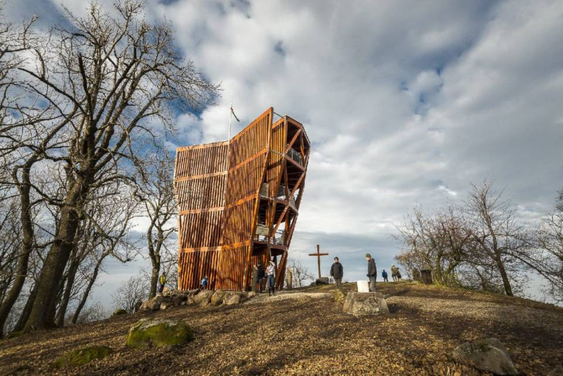
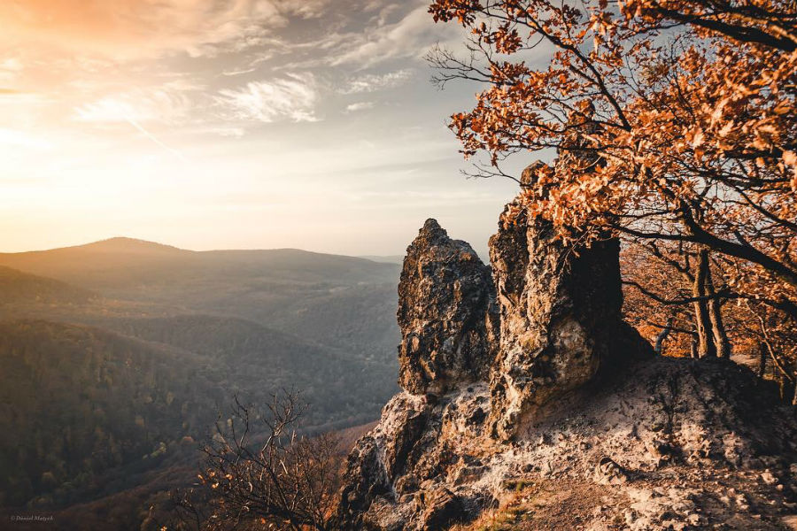
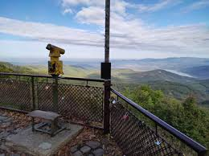

Prédikálószék
A Prédikálószék a Visegrádi-hegység egyik legimpozánsabb kilátópontja, és 639 méter magas. Innen páratlan panoráma nyílik a Dunakanyarra és a Pilis hegységre. A kilátóhely könnyen elérhető, több jól jelzett túraútvonal vezet ide. Az egyik legnépszerűbb túraútvonal a Dömösről indul, és változatos terepen halad. A Prédikálószék csúcsa különösen vonzó a túrázók és természetfotósok számára, mivel a látvány minden évszakban lenyűgöző. Tavasszal és nyáron zöldellő erdők, ősszel színpompás lombkoronák, télen pedig hófödte táj kíséri a túrázókat. A kilátópont különösen népszerű napfelkelte és napnyugta idején, amikor a napfény aranyszínűre festi a Dunát és a hegyeket. A Prédikálószék népszerűsége miatt hétvégente sok turista látogat el ide, ezért érdemes korán kelni a nyugalom érdekében. Az útvonal mentén több pihenőhely és pad is található, ahol a túrázók megpihenhetnek és élvezhetik a természetet. A kilátópont közelében madárlesek is vannak, így a madármegfigyelők számára is ideális helyszín. A terület gazdag növény- és állatvilággal rendelkezik, és a természetvédelmi terület része, ezért fontos betartani a természetvédelmi szabályokat. A túrázók gyakran találkoznak itt vadvirágokkal, gombákkal és különféle madárfajokkal.
Vadálló-kövek
A Vadálló-kövek a Pilis egyik legismertebb és leglátványosabb túracélpontjai közé tartozik. Ez a hely a hegygerincen található, és lenyűgöző panorámát kínál az arra járóknak. A sziklák különleges formáit az erózió alakította ki az évezredek során. A Vadálló-kövekre vezető túraútvonal meredek, de a kilátás minden erőfeszítést megér. A túraútvonal számos helyen kőlépcsőkön és keskeny ösvényeken halad. Az útvonal mentén található kilátópontok pihenésre és fotózásra kiválóan alkalmasak. A túra a Pilisszentkeresztről indul, és több órás séta után érhető el a csúcs. A helyszín a természet szerelmeseinek és a fotósoknak egyaránt kedvelt célpontja. A Vadálló-kövek nevét a sziklák vad formái után kapta. A túrázók gyakran találkozhatnak itt helyi növény- és állatfajokkal. A terület fokozottan védett, ezért fontos betartani a természetvédelmi szabályokat. A Vadálló-kövek környékén számos más túraútvonal is található. Az erdő csendje és a természet közelsége igazi kikapcsolódást nyújt. A túrázóknak érdemes megfelelő felszereléssel és elegendő vízzel készülni. A Vadálló-kövek elérése igazi kihívás, de a látvány minden fáradtságot kárpótol.
Dobogó-kő
Dobogókő egy varázslatos kirándulóhely a Visegrádi-hegységben, Magyarország szívében. 699 méter magas, és kiváló kilátást nyújt a Dunakanyarra és a környező hegyekre. A hely népszerű a túrázók körében, akik különböző nehézségű útvonalakat találhatnak itt. Az egyik legkedveltebb útvonal a Thirring-körút, amely Dobogókő érintésével körbejárja a vidéket. A terület híres a különleges sziklaformációkról és a változatos növényvilágról. A helyszínen található a Téry Ödön-emlékmű, amelyet a magyar turizmus egyik úttörőjének tiszteletére állítottak fel. Dobogókő spirituális jelentőséggel is bír, sokan úgy tartják, hogy itt található a Föld szívcsakrája. Télen a hely síelésre is alkalmas, mivel sípályákat és sífelvonókat is találunk itt. A téli sportok szerelmesei számára igazi paradicsom. A hegy csúcsán álló kilátó télen-nyáron látogatható, és kiváló kilátást nyújt minden évszakban. A turisták számára több szálláslehetőség és étkezési lehetőség is rendelkezésre áll. A Dobogókőre vezető utak jól karbantartottak és jelzettek. Az erdő csendje és a természet közelsége itt mindig megnyugtató élményt nyújt. Számos tanösvény is található, amelyek a helyi flórát és faunát mutatják be.